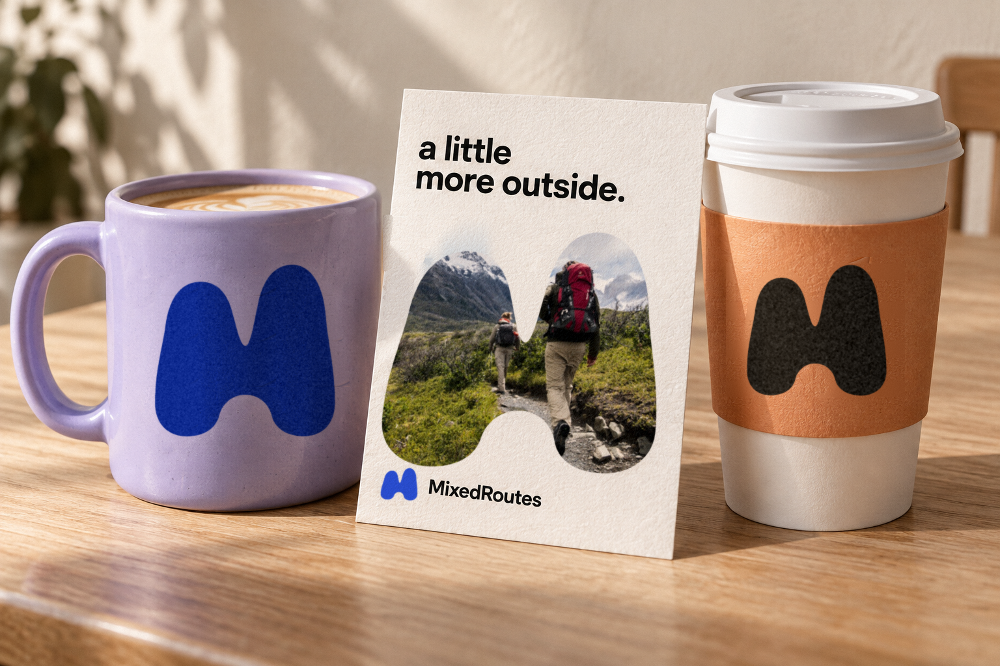

Logo concept
Option D / The symbolism
One peak lifts higher, like a foot mid-stride, so the M is always heading out to meet your people.
Physical collateral

The lifted peak still reads on a curved, everyday object.
The M becomes a window, and the arch a doorway into the plan.
One solid silhouette, printed flat in a single color.